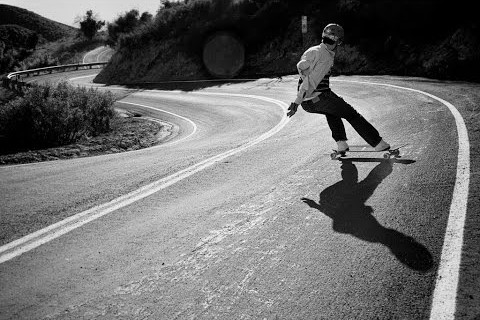

About Axel Longboards
Bringing YOU info since 2020!
Axel Longboards is the number one wiki when it comes to information about longboards. We are commited to bringing you informative, concise and up-to-date information about the latest longboards and longboarding events.

A longboard is a large skateboard with soft wheels that is used to simulate surfing on concrete. they were first made sometime around 1914 in american, where surfers wanted to surf when there were no waves. they would put roller skate wheels onto planks of wood, and skate along the sidewalk, giving them there original name, which was "Sidewalk Surfers". After decades of alterations, many different types of longboards were created, bringing forth the diverse amount of boards there are today.
This wiki is split up into four different pages:
- This page detailing what a longboard is.
- A page detailing the different types of longboards.
- A page detailing the different parts of a longboard.
- A page dedicated to recommending different longboards for each type of longboard.